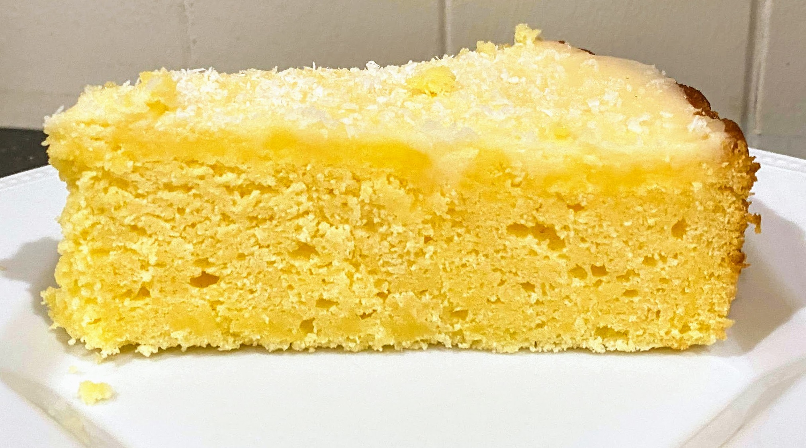

Lemon Curd Cake (Gluten Free)

- 150g butter (room temp)
- 3/4 cup caster sugar
- zest and juice of 2 lemons
- 3 eggs
- 1 1 /2 cup GF SR flour
- 2/3 cup of sour cream
Preheat oven to 180 degrees and grease cake tin
Beat bnutter, sugar and zest until light and fluffy
Beat in eggs, one at a time
Fold in flour, juic and sour cream
Pour into tin and bake for 50 mins
A beauitful cake to share with your gluten free friends